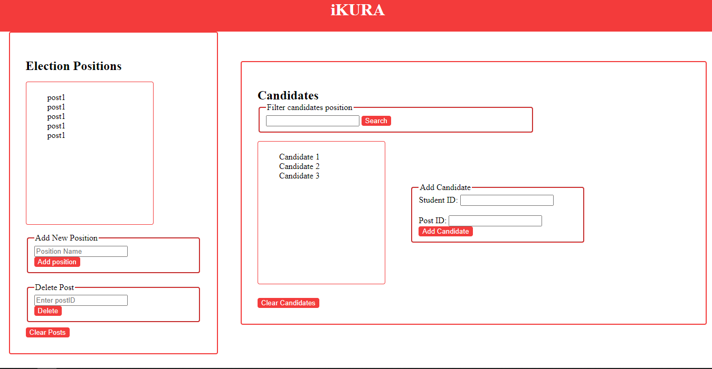
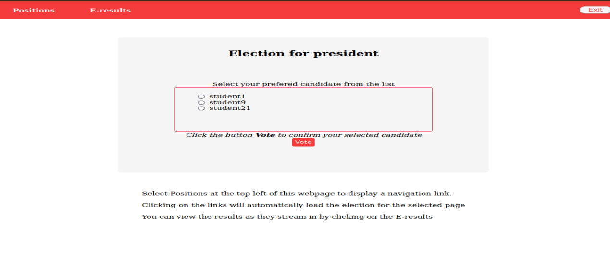

Features
-
Login
Log in to access your voting dashboard and view results in real time
-

Administrative Privileges
Get access to advanced features and manage the voting process.
-
Vote
Cast your vote for your favorite candidates.

About iKURA
Inspiration
I worked as a clericl officer during the Kenya General Elections of 2022 and the pressure to deliver transparent and accurate results made me realize its importance for elections. During tallying, the tension in the country was unprecedented and any little aggravation was enough to cause post election violence. The thought of having a system where voters can elect candidates digitally and the results processed without human interference beckoned daily. I picked the idea to implement the system but for university institutions since they also experience the same tragedy but the risks are minimal.